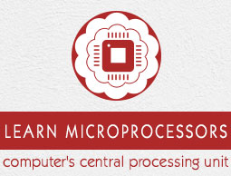
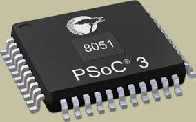

Welcome to the Assembly language tutorial

Organization of 8086 processor
Assembly Language Syntax
Data Representation
Variable Declaration
Instruction Types:
flow instructions
Arithmetic instructions
Bit manipulation instructions
Flow control instructions
Memory Segmentation
Program Structure
Addressing Modes
Input and Output
The stack
Procedures
Macros
String
BIOS and DOS Interrupts
8051 
Introduction to 8051 microcontroler
Artitecture of 8051 microcontroller
pin description
8051 stack
Bit Addressables
next